한눈에 보는 수업
설명은 1분이면 끝!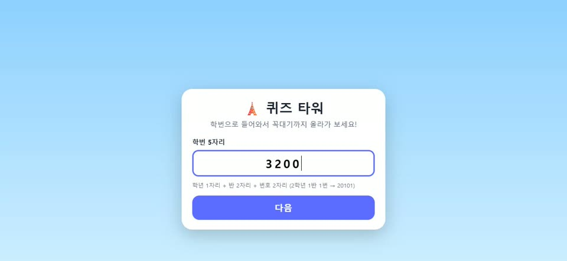
학번으로 입장
비밀번호 4자리 · 별명 자동
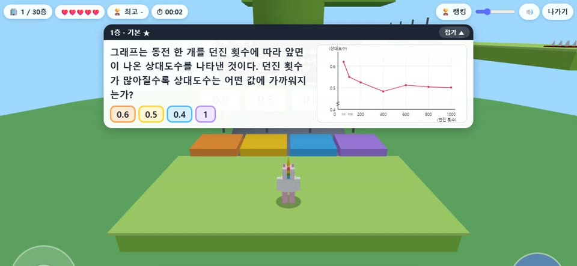
문제 카드 보기
그림 · 분수까지 크게
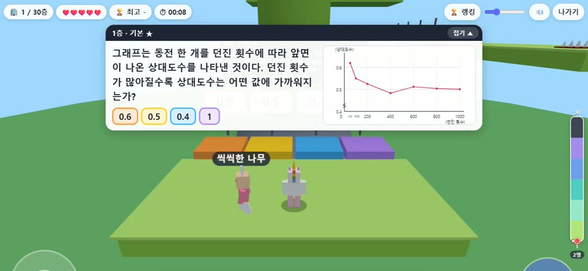
정답 발판 점프
맞히면 계단이 열려요
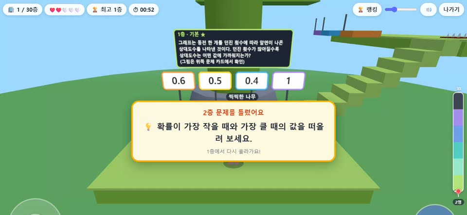
틀리면 힌트
정답 대신 한 줄 힌트
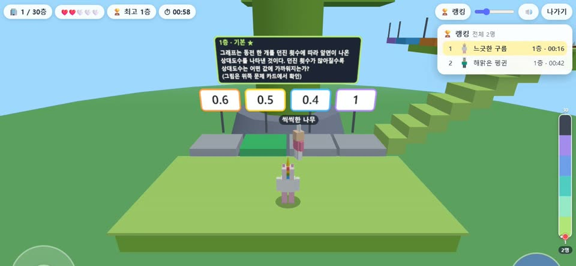
꼭대기 · 랭킹
별명으로만 표시
타워 지도
칸 하나 = 한 층 = 한 문제연습 구간 · 기본 ★
점프 계단 · 표준 ★★
장애물 · 발전 ★★★
빨간 칸 = 마의 구간(10·20·30층, 굴러오는 공) · 틀리면 5층 단위 색 구간의 시작 층으로
게임 요소
2층부터 아이템!덫
밟으면 하트 −1
점프로 넘으면 안전
보물상자
하트 +1
2층 건너뛰기
한 판에 2장까지
마의 구간
굴러오는 공을 피하기
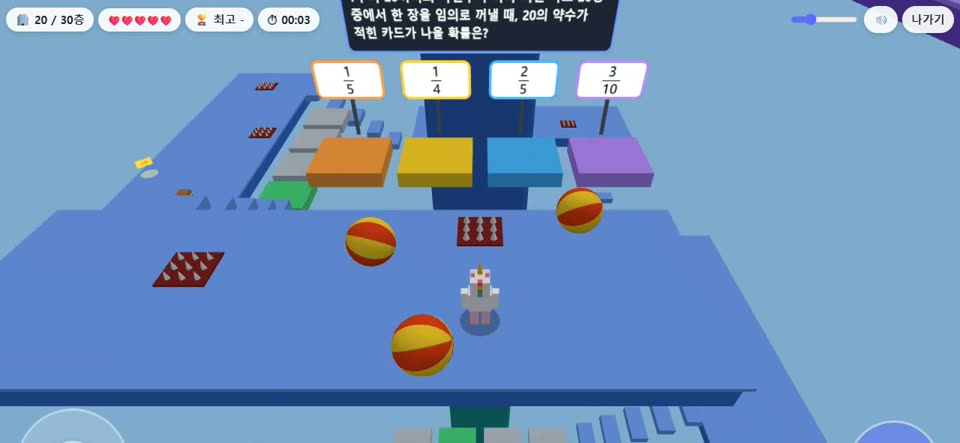
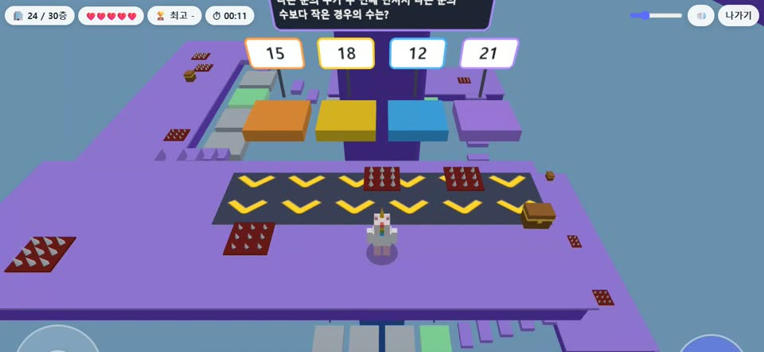
실제 화면
별명·학번은 시연용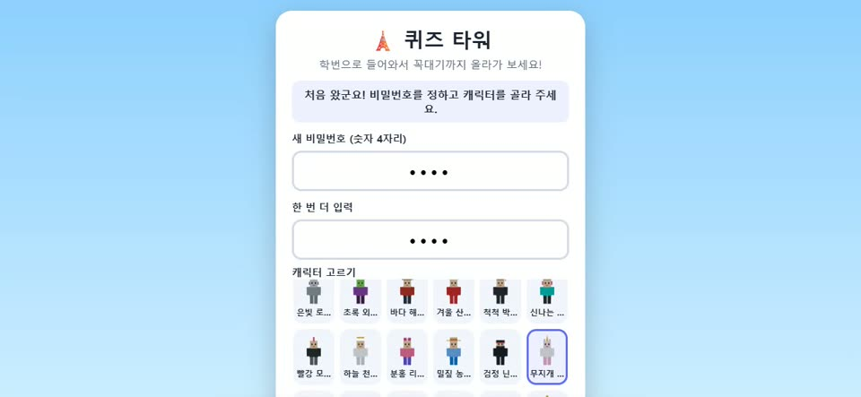
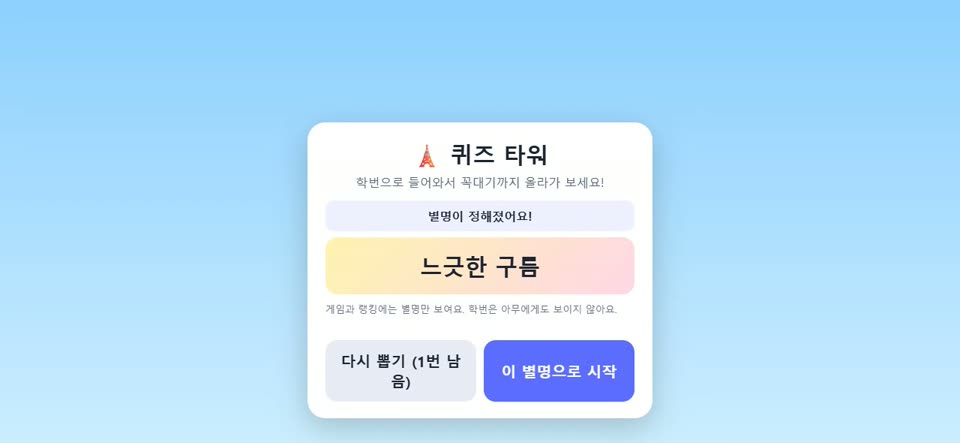
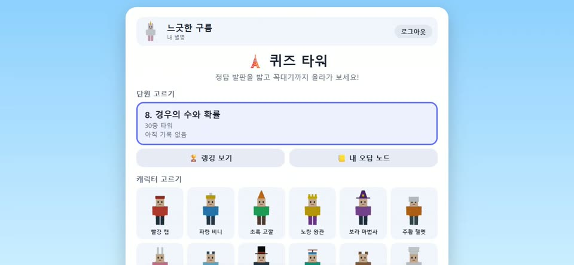
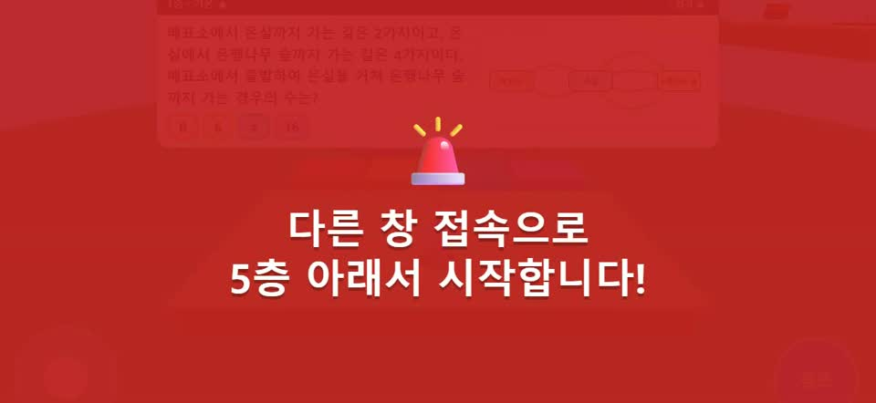
선생님 화면
교사 계정으로만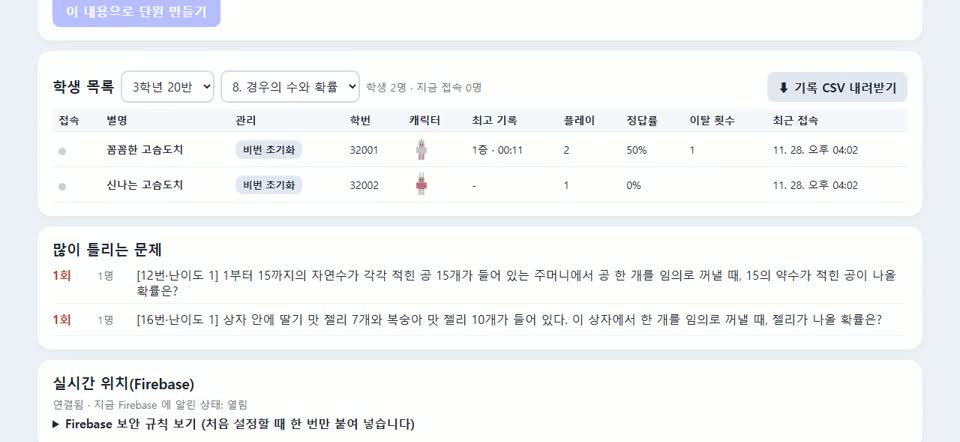
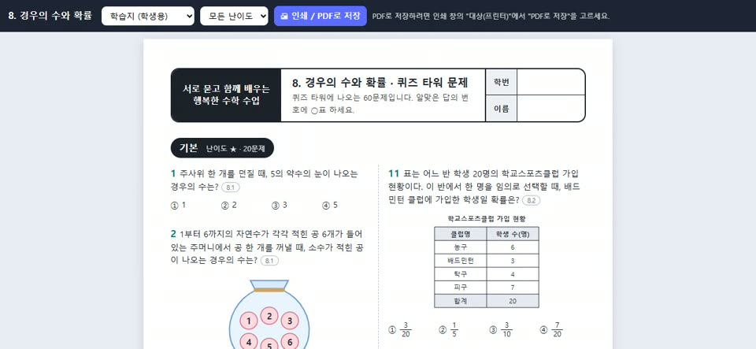
잠그면 학생 화면에 10초 카운트다운 → 기록 저장 후 종료.
다른 창으로 나간 학생은 5층 아래서 바로 다시 시작하고, 선생님 화면에는 이탈 횟수만 남아요. 수업이 멈추지 않아요.
연수·부스 체험용 모드
학번·비밀번호 PASS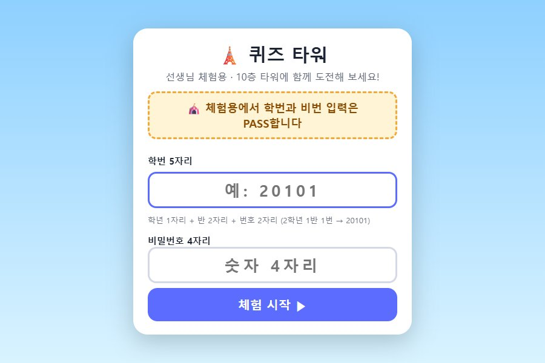
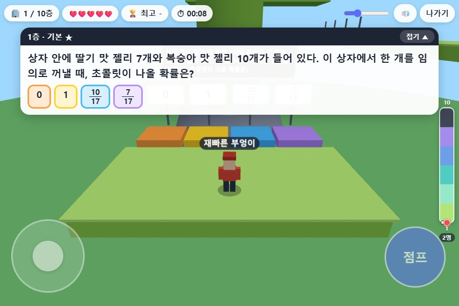
1~3층 연습 구간, 5·10층 마의 구간, 6층부터 장애물, 덫·보물상자·쿠폰까지 10층 안에 모두 들어 있어요.
기록·랭킹은 남지 않아요. 체험이 끝나면 꼭 체험용 모드를 꺼 주세요.
시작하기
선생님이 게임 열기
관리자 화면의 큰 스위치 · 반만 골라 열기도
학번 5자리로 입장
2학년 1반 1번 → 20101 · 다음 시간엔 이어하기
끝나면 잠그기
10초 뒤 기록 저장 · 오답 노트로 복습
자주 묻는 질문
다음 시간에 이어서 하나요?
네. 학번과 비밀번호로 들어오면 마지막으로 통과한 층에서 이어집니다.
학번이 친구에게 보이나요?
아니요. 게임 · 랭킹 · 이름표에는 자동으로 정해진 별명만 보이고, 학번은 선생님 화면에만 나옵니다.
정답을 알려 주나요?
틀리면 정답 대신 한 줄 힌트만 보여 줍니다. 오답 노트에도 틀린 횟수와 힌트만 있어요.
비밀번호를 잊으면요?
선생님 화면에서 [비번 초기화] → 다음 접속 때 새로 정합니다. 별명과 기록은 그대로입니다.
다른 단원도 되나요?
엑셀 양식에 문제를 적어 올리면 새 단원 타워가 바로 생깁니다.
요금은요?
무료 서비스로 운영합니다. 한 반 30명 기준으로 한 달 약 12~30시간 수업할 수 있어요.